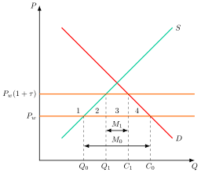
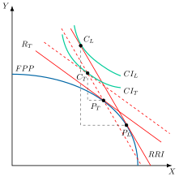
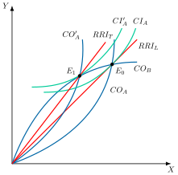
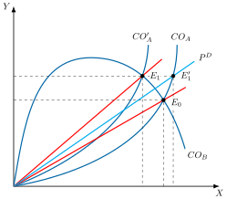
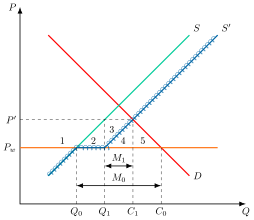
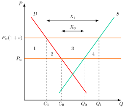
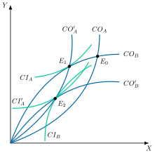
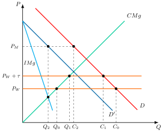

Apuntes para la oposición al Cuerpo de Diplomados Comerciales del Estado
16 Política comercial (I): instrumentos y efectos. Barreras arancelarias y no arancelarias. Otros instrumentos tradicionales.
Tema pendiente de revisión. Este tema está publicado pero aún no lo he revisado a fondo: puede contener erratas o partes por pulir.
16.1 Introducción  1'
1'
La guerra comercial entre Estados Unidos y China ha trascendido los aranceles: es una pugna por el liderazgo tecnológico y la influencia global. Ambas potencias emplean instrumentos arancelarios y no arancelarios para debilitar las cadenas de suministro rivales y asegurar el control de tecnologías críticas, reescribiendo así las reglas del comercio mundial.1
En este contexto, la política comercial se define como el conjunto de medidas económicas destinadas a influir en el volumen y dirección del comercio internacional, modificando la asignación global de recursos. Las medidas que encarecen el acceso al mercado mediante un gravamen son las barreras arancelarias, y el resto de medidas que alteran el comercio sin gravarlo directamente son las barreras no arancelarias.
La teoría económica clásica y neoclásica favorece el libre comercio por su eficiencia, la especialización basada en ventajas comparativas y la mejora del bienestar global. Sin embargo, aunque el libre comercio ha ganado el “debate de las ideas”, en la práctica los países recurren con frecuencia a políticas proteccionistas, generando un “dilema del prisionero” donde el equilibrio individual no es óptimo para todos.
La política comercial se divide en defensiva, que utiliza instrumentos arancelarios y no arancelarios para restringir importaciones, y ofensiva, orientada a fomentar exportaciones.2
Esta exposición se centrará en los instrumentos tradicionales de política comercial y en sus efectos económicos, a través del siguiente esquema:
Justificación de la política comercial defensiva.
Instrumentos arancelarios: tipos, efectos y medición del proteccionismo.
Instrumentos no arancelarios: cuotas, restricciones voluntarias a la exportación, subsidios a la exportación y defensa comercial.
Otros instrumentos tradicionales: medidas reglamentarias, preferencias nacionales y apoyo a la exportación.
16.2 Justificación de la política comercial defensiva 1'
La política comercial defensiva encuentra respaldo en diversos argumentos teóricos y prácticos que explican su aplicación recurrente por parte de los Estados, incluso en contextos donde el libre comercio es normativamente preferido:
Efectos redistributivos: Según el teorema de Stolper-Samuelson (1941), la apertura comercial puede beneficiar a ciertos factores de producción mientras perjudica a otros, generando tensiones distributivas que justifican medidas proteccionistas para mitigar impactos negativos sobre grupos vulnerables.
Desaparición de empresas nacionales: La novísima teoría del comercio internacional destaca el efecto selección, por el cual la liberalización comercial provoca una reasignación de recursos hacia empresas más eficientes. Las menos productivas tienden a salir del mercado, y su desaparición puede traducirse en desempleo y pérdida de tejido industrial.
Arancel óptimo: En el caso de economías grandes, la imposición de un arancel puede mejorar el bienestar nacional al modificar los términos de intercambio a su favor, siempre que la curva de oferta neta del resto del mundo no sea perfectamente elástica y que los demás países no respondan.
Recaudación fiscal: Los aranceles también cumplen una función tributaria, especialmente en países donde los ingresos aduaneros representan una proporción significativa del presupuesto público.
Otras motivaciones: Las medidas defensivas pueden responder a presiones geopolíticas,3 a la corrección de fallos de mercado —como el mecanismo de ajuste en frontera por carbono (CBAM)4— o a deficiencias institucionales en el sistema multilateral de comercio, como las limitaciones de la OMC en la aplicación de medidas antidumping o antisubvención.
Estos argumentos explican por qué los Estados protegen. Falta ver cómo lo hacen, con qué instrumentos y con qué efectos.
16.3 Instrumentos arancelarios 9'
Un arancel se define como un gravamen o un impuesto indirecto establecido sobre las mercancías que entran, salen o simplemente circulan por un territorio aduanero.
El objetivo final de un arancel será regular el volumen de comercio y su estructura, dado que puede aplicarse con carácter selectivo. Igualmente tiene carácter recaudatorio.
Existen diferentes clases de aranceles:
Importación, con el fin de proteger la industria nacional o recaudar.
Exportación, utilizados sobre todo en PED con el objetivo de mejorar la RRI5, fomentar el procesamiento doméstico de las materias primas y recaudar6.
De tránsito, grava a los bienes en un territorio aduanero distinto al origen y al destino de los productos.
A su vez, el diseño del arancel comprende diferentes formas:
Ad valorem, porcentaje fijo sobre el precio de los bienes, \(P_{D}=\left(1+\tau\right)P_{W}\), donde \(\tau\) es el tipo del arancel, \(P_{D}\) es el precio doméstico y \(P_{W}\) es el precio internacional.
Específico, cuantía fija por unidad de mercancía.
Compuesto, suma un componente ad valorem y otro específico sobre la misma mercancía.
Mixto, se aplica el arancel ad valorem o el específico según el valor de la mercancía.
Los distintos tipos de aranceles generan efectos diferenciados tanto en términos administrativos como distributivos y de protección comercial7:
Aplicación administrativa: El arancel ad valorem presenta mayores dificultades operativas, ya que requiere determinar con precisión el valor de cada bien importado. En contraste, los aranceles específicos —calculados como una cantidad fija por unidad— simplifican el proceso al prescindir de esta valoración.
Equidad distributiva: En mercados donde los productos presentan una amplia gama de precios, el arancel ad valorem tiende a ser más equitativo, ya que grava proporcionalmente al valor. Por el contrario, los aranceles específicos pueden resultar regresivos, afectando en mayor medida a los bienes de menor precio y, por ende, a los consumidores de menores ingresos.
Nivel de protección: El grado de protección que ofrece un arancel específico varía inversamente con el precio internacional del bien. A medida que el precio mundial aumenta, el efecto protector del arancel específico disminuye. En cambio, el arancel ad valorem mantiene un nivel de protección constante, al ajustarse automáticamente al valor del bien.
Para que ambos tipos de arancel generen efectos equivalentes, debe cumplirse la siguiente condición de equivalencia: \[\dfrac{\tau_{\text{Espec{í}fico}}}{\text{Precio mundial del bien}}=\tau_{\text{Ad valorem}} \tag{16.1}\]
Síntesis de los tipos de arancel
Los aranceles ad valorem son los más utilizados en la práctica, ya que ajustan el gravamen al valor de la mercancía, lo que permite una protección proporcional y más equitativa.
No obstante, los aranceles específicos —que imponen una cantidad fija por unidad— resultan más sencillos de aplicar desde el punto de vista administrativo.
Ambos tipos de aranceles generan efectos relevantes: modifican la estructura de precios relativos, alterando el patrón de comercio internacional, y reducen el volumen de importaciones. Si el precio interior con arancel alcanza el precio de autarquía, el arancel es prohibitivo y las importaciones desaparecen8.
Además, el impacto de los aranceles varía según el tamaño del país que los aplica: mientras los países pequeños enfrentan precios internacionales como dados, los países grandes pueden influir en los términos de intercambio, lo que abre la posibilidad de aplicar un arancel óptimo para mejorar su bienestar.
A continuación se estudian los efectos del arancel, primero en un país pequeño y después en uno grande.
Efectos de la protección arancelaria en un país pequeño
El análisis parte de los siguientes supuestos:
El país es pequeño, por lo que la relación real de intercambio está dada y no puede influir en el precio mundial.
Existe un único bien importado, homogéneo y también producido domésticamente.
La oferta internacional es perfectamente elástica al precio mundial.
No existen costes de transporte.
Se introduce un arancel ad valorem sobre el producto importado, lo que afectará el precio interno, el volumen de comercio y el bienestar económico.
Equilibrio parcial
En un análisis de equilibrio parcial, gráficamente en un plano de precios, \(P\), y cantidades, \(Q\), como el de la Figura 16.1 se representa la demanda, \(D\), y la oferta, \(S\), y, a unos precios mundiales establecidos, \(P_{w}\), se va a consumir \(C_{0}\), producir \(Q_{0}\) y la diferencia va a ser cubierta con importaciones, \(M_{0}\).
Efectos sobre cantidades y precios
El establecimiento de un arancel \(\tau\), que eleva el precio interior a \(P_{w}\left(1+\tau\right)\), va a provocar diferentes efectos:
Aumento del precio del bien en el mercado nacional, de manera que estará por encima del precio internacional en la cuantía del arancel.
Aumento de la producción del bien a \(Q_{1}\), ya que al aumentar el precio de las importaciones la producción nacional tiene mayor capacidad para competir y por lo tanto aumenta su producción. Ahora se importa menos del exterior ya que es más caro.
Disminución del consumo del bien a \(C_{1}\), ya que el arancel encarece el precio del bien. Los consumidores pasan a guiarse por el precio doméstico, por lo que el consumo se reduce.
Disminución de las importaciones a \(M_{1}\), debido al encarecimiento del bien.
Efectos sobre el bienestar
A su vez, dadas las áreas 1, 2, 3 y 4:
El excedente del consumidor disminuirá en todas las áreas. Los consumidores estarán peor porque algunos seguirán comprando el bien (desde el origen a \(C_{1}\)), pero a un precio mayor. Otros consumidores estarán peor porque ya no pueden comprar el bien al nuevo precio (de \(C_{1}\) a \(C_{0}\)).
El excedente del productor aumenta en el área 1.
El Estado obtiene una recaudación igual al valor de importaciones por la cuantía del arancel, equivalente al área 3, resultante de multiplicar el arancel por la cantidad importada \(M_{1}\).
En conjunto, existe una pérdida de bienestar representada por las áreas 2 y 4:
La pérdida del área 2 se debe a la ineficiencia de la producción doméstica, ya que se transfieren recursos a la producción de este bien desde otros sectores cuya producción sería más eficiente.
La pérdida del área 4 se debe a que los consumidores pagan un precio más alto, lo que distorsiona el patrón de consumo respecto a otros bienes.

Conclusiones
El arancel reduce el bienestar en el país pequeño por dos vías. Por un lado, una mayor proporción de la demanda doméstica es cubierta por los productores domésticos, que son menos eficientes (pérdida de producción). Por otro, los consumidores renuncian a unidades que valoraban más que su coste internacional (pérdida de consumo). Para aranceles pequeños, curvas aproximadamente lineales y elasticidades de la oferta, \(\varepsilon_{S}\), y de la demanda, \(\varepsilon_{D}\), evaluadas en libre comercio, la pérdida de eficiencia (es decir, el exceso de gravamen), Pda, viene dada por la siguiente fórmula: \[Pda=\dfrac{1}{2}\cdot\tau^{2}\cdot P_{W}\cdot\left(\varepsilon_{S}\cdot Q_{0}+\left|\varepsilon_{D}\right|\cdot C_{0}\right) \tag{16.2}\]
Por tanto, la ineficiencia del arancel dependerá:
(+) Elasticidades de la oferta y de la demanda: cuanto más elásticas sean, mayor es la sensibilidad al precio y, por tanto, mayores serán las distorsiones en el consumo y en la producción.
(++) Cuantía del arancel: la pérdida crece con su cuadrado, de modo que duplicar el arancel la multiplica por cuatro. Por eso es mejor poner aranceles pequeños en muchos productos que aranceles muy elevados en unos pocos.
El arancel produce una redistribución del bienestar de los consumidores a los productores y al Gobierno.
El arancel reduce el bienestar global (en la cuantía en que se reduce el bienestar del país pequeño, porque al ser pequeño no consigue influir en los precios internacionales). El arancel óptimo es cero.
Implicaciones de política económica: la apertura comercial de un país pequeño es la mejor política para el país y aumenta el bienestar global.
Equilibrio general
El análisis de equilibrio parcial es demasiado simplista, ya que asume que el arancel solo tendrá efectos en el mercado del bien sobre el cual se aplica. En realidad, el arancel también tendrá otros efectos sobre la economía9.
Así, el análisis desde un punto de vista general permite estudiar los efectos del arancel en los dos mercados \(X\) e \(Y\). Suponiendo que existe ventaja comparativa en la producción de \(X\), gráficamente, en un plano de bienes \(X\) e \(Y\) como el de la Figura 16.2 se representa la \(FPP\), la \(RRI\) y la curva de indiferencia \(CI_{L}\), produciendo en \(P_{L}\) y consumiendo en \(C_{L}\), generando un determinado triángulo de Haberler.
Al introducir un arancel el precio relativo doméstico, \(\frac{P_{X}}{P_{Y}(1+\tau)}\), ya no es igual a la RRI, \(\frac{P_{X}}{P_{Y}}\), sino menor, por lo que disminuye la pendiente de la recta del precio relativo doméstico. Se producirán los siguientes efectos10:
Producción: como los productores domésticos responden al precio relativo doméstico, disminuirán la producción de \(X\) y aumentarán la de \(Y\), dado que ahora es más rentable. Por lo tanto, la relación real de precios relativos nacionales, \(R_{T}\), disminuirá y se producirá en \(P_{T}\).
Consumo: el nuevo punto de consumo tiene que cumplir dos condiciones:
Dado que los consumidores domésticos, como los productores, responden al precio relativo doméstico, la \(RMS\) tiene que ser igual al precio relativo doméstico –esto es, la curva de indiferencia tiene que ser tangente a la recta de precios domésticos–, y dado que se supone que el Gobierno reparte entre los consumidores la recaudación del arancel, la recta de precios relativos se desplaza paralelamente hacia arriba.
El nuevo punto de consumo se tiene que situar sobre la \(RRI\) que pasa por el nuevo punto de producción, \(P_{T}\), ya que los términos de intercambio con el resto del mundo no han cambiado –al ser un país pequeño–, por lo que el país podrá comerciar su producción moviéndose a lo largo de dicha recta.
Así, se consumirá en el punto \(C_{T}\) con la curva de indiferencia \(CI_{T}\) asociada.
Comercio internacional: se reducen las importaciones y las exportaciones. Esto se observa en la disminución del triángulo de Haberler.
Efectos sobre el bienestar del país pequeño: negativo, ya que la economía se sitúa en una curva de indiferencia correspondiente a un menor nivel de utilidad –más cercana al origen–. Además, se produce una redistribución del bienestar: suponiendo el marco del modelo Heckscher-Ohlin-Samuelson, el teorema de Stolper-Samuelson se cumplirá y, por tanto, aumentará la retribución real del factor que se utilice intensivamente en la producción del bien cuyo precio aumenta, es decir, \(Y\): se beneficia el factor escaso del país, que es el que se utiliza intensivamente en el bien importable, y se perjudica el factor abundante.
Efectos sobre el bienestar global: negativo, ya que se reduce en la cuantía del bienestar del país pequeño.

Efectos de la protección arancelaria en un país grande
Si se relaja el supuesto de país pequeño, el arancel deja de ser neutral para los precios internacionales. Un país grande tiene capacidad para afectar a los precios relativos internacionales, según su volumen de exportaciones e importaciones, y, por tanto, la imposición de un arancel sobre las importaciones modificará los términos del intercambio.
Análisis gráfico
Gráficamente, en un plano de importaciones/exportaciones de \(X\) e \(Y\) como el de la Figura 16.3, se representan:
La curva de oferta neta del país A, \(CO_{A}\), el país grande, y la curva de oferta neta de \(B\), \(CO_{B}\), que será el resto del mundo. Las curvas de oferta neta representan las combinaciones de exportaciones e importaciones de un país para cada relación de precios internacionales. Son cóncavas respecto al eje de importaciones de cada país pues se está dispuesto a intercambiar exportaciones por importaciones a una tasa decreciente.
La intersección entre ambas, \(E_{0}\), es el equilibrio, porque allí se igualan la oferta de exportaciones y la demanda de importaciones de ambos países. La \(RRI\) es la pendiente de la recta que parte del origen y pasa por \(E_{0}\).
En este contexto, se va a suponer que el país grande, A, tiene una ventaja comparativa en el bien \(X\) por lo que lo exporta mientras que importa \(Y\).
Además, se introducen las curvas de indiferencia comercial, que recogen aquellas combinaciones de importaciones y exportaciones que ofrecen un mismo nivel de bienestar. Cada curva de indiferencia comercial está asociada a una curva de indiferencia social –que representa las combinaciones de consumo de \(X\) e \(Y\) que ofrecen el mismo nivel de bienestar social– y, por construcción, la pendiente de la curva de indiferencia social en cada punto es la relación marginal de sustitución, que en el equilibrio coincide con la relación marginal de transformación. Las curvas de indiferencia comercial representan una mayor satisfacción cuando se desplazan hacia arriba y hacia la izquierda ya que se consumirá más y saldrán menos recursos –hacia la derecha y abajo si se habla del país que tiene sus exportaciones en el eje de ordenadas–.
En el equilibrio \(E_{0}\) se verifica la relación de igualdad entre la relación marginal de sustitución de A y la relación marginal de transformación de A con la relación real de intercambio, ya que la curva de indiferencia comercial es tangente a la relación real de intercambio, \(RMS_{A}=RMT_{A}=RRI\).
Partiendo del equilibrio inicial \(E_{0}\), si el país grande, A, impone un arancel sobre la importación del bien \(Y\), se producen dos efectos:
(+) Mejora de la Relación Real de Intercambio (RRI)11: Se desplazará la curva de oferta neta del país hacia la izquierda, \(CO^{\prime}_{A}\), cambiando los precios internacionales, es decir, mejorará la relación real de intercambio a \(RRI_{T}\) , mejorando el bienestar al acceder a la curva de indiferencia comercial \(CI^{\prime}_{A}\)12.
(–) Aumento del precio relativo doméstico del bien que se importa: se reducirá el volumen de comercio ya que se producirá en el país A una mayor cantidad del bien \(Y\), que es el bien que importa el país grande, y disminuirá la producción de \(X\), el bien que exporta el país grande, por lo que en términos generales el comercio es menor –mismo efecto que en un país pequeño, pero nuevo con respecto a equilibrio parcial–.
Por lo tanto:
Los efectos sobre el bienestar del país grande serán ambiguos, y dependerán de cuál de los dos efectos anteriores predomine.
Los efectos sobre el bienestar global son, sin embargo, inequívocamente negativos, ya que la ganancia del país que impone el arancel, si la hay, es siempre menor que la pérdida del país exportador.

Arancel óptimo
El arancel óptimo es el tipo que maximiza el bienestar del país grande, y se alcanza donde su curva de indiferencia comercial es tangente a la curva de oferta neta del resto del mundo.
Además, la cuantía del arancel óptimo vendrá determinada por13:
\[\tau^{*}=\dfrac{1}{\varepsilon-1} \tag{16.3}\] donde \(\varepsilon\) es el valor absoluto de la elasticidad de la curva de oferta neta de B, es decir, la elasticidad de la demanda de B por las exportaciones de A. Equivale a 1 más la elasticidad de la oferta de exportaciones de B, \(\eta\), de modo que la fórmula también puede escribirse como \(\tau^{*}=\frac{1}{\eta}\). Así lo recogen Salvatore (2020, 224) y Gandolfo (2014, 544).
De esta forma:
Si es perfectamente elástica, \(\varepsilon\rightarrow\infty\) en el caso del país pequeño entonces el arancel óptimo será igual a 014.
Si la elasticidad es superior a la unidad, \(\varepsilon>1\), el arancel óptimo será igual al valor que tome la fórmula.
Si la elasticidad se aproxima a la unidad, \(\varepsilon\rightarrow1\), el arancel óptimo crece sin límite. La curva de oferta neta de B es horizontal (B ofrece una cantidad fija de importaciones para A) y el arancel se traslada íntegro al precio mundial.
Si en el punto de partida la elasticidad es inferior a la unidad, \(\varepsilon<1\), la oferta de exportaciones de B tiene pendiente negativa (\(\eta=\varepsilon-1<0\)) y la fórmula no puede aplicarse en ese punto. El arancel óptimo existe y es aún mayor: A debe restringir su comercio hasta situarse en el tramo elástico de la curva de oferta neta de B, que es donde se alcanza la tangencia.15
Al igual que el monopolista restringía la cantidad producida y se situaba en el tramo elástico de la demanda superior a la elasticidad unitaria, lo mismo sucede con las curvas de oferta neta.
Sin embargo, a partir de las políticas de imposición puede surgir un problema y es que no se están teniendo en cuenta las posibles represalias. Si otro país grande toma las mismas medidas para aumentar el bienestar, se podría generar una guerra arancelaria que podría disminuir el bienestar de ambos países (equilibrio de Nash subóptimo)16. Una guerra comercial es una sucesión de aranceles y represalias entre países grandes, cada uno de los cuales busca mejorar sus términos de intercambio. En el equilibrio de Nash resultante, el comercio mundial pierde respecto al libre comercio. Por eso el arancel óptimo, que es el mejor arancel de un país si el resto no responde, no es un equilibrio de política comercial.
Las paradojas de Lerner y de Metzler
En un país grande, el arancel puede dar lugar además a dos paradojas:
Paradoja de Lerner (1936): el establecimiento de un arancel en un país grande puede empeorar la \(RRI\) si el país que establece el arancel destina una parte desproporcionada de los ingresos arancelarios al consumo del bien importado (porque con el aumento de la demanda: ↑\(P_{Y}\))17: \[RRI=\left(\dfrac{P_{X}}{P_{Y}\uparrow}\right)\downarrow \tag{16.4}\] la Paradoja de Lerner ocurre cuando el país que impone el arancel se encuentra en el tramo inelástico de su curva de oferta neta y, además, destina la recaudación al bien importado (Gandolfo 2014, 229-30).
Paradoja de Metzler (1949): el establecimiento de un arancel en un país grande puede disminuir el precio relativo doméstico del bien importado –es decir, desprotegerlo– si el país que establece el arancel destina una parte desproporcionada de los ingresos arancelarios al consumo del bien exportado (↑\(P_{X}\)): \[P^{D}=\left(\dfrac{P_{X}\uparrow\uparrow}{P_{Y}\left(1+\tau\right)\uparrow}\right)\uparrow \tag{16.5}\]
Análisis gráfico de la paradoja de Metzler
es necesario que el equilibrio de libre comercio se encuentre en un punto en el cual la curva de oferta neta del país que no establece el arancel sea inelástica (es decir, que el precio de las exportaciones para ese país sea ya lo suficientemente alto).
Gráficamente, en un plano de importaciones y exportaciones de \(X\) e \(Y\) como el de la Figura 16.4, el equilibrio de libre comercio se produce en el tramo inelástico del país B (el que no impone el arancel). Si el país A impone un arancel, su curva de oferta neta se desplaza hacia dentro y el nuevo equilibrio será \(E_{1}\). Como se observa, el precio relativo mundial de Y (que es el bien que importa el país A) disminuye –como ocurría antes–, pero ahora el precio relativo doméstico de Y en el país A disminuye. Es decir, ahora con un arancel el país grande A mejora su RRI, pero el precio doméstico del bien que importa disminuye (se desprotege). La construcción sigue la de Södersten y Reed (1994, fig. 11.15, p. 236).

La paradoja de Metzler analíticamente
la paradoja de Metzler tendrá lugar cuando la propensión marginal del país que impone el arancel (A) a consumir el bien que exporta (\(X\)) sea mayor que la elasticidad de la demanda del país que no impone el arancel (B) sobre dicho bien (\(X\)): \(PMg^{A}_{Cx}>\varepsilon^{B}_{x}\)18.
De hecho, la paradoja de Metzler tendrá más posibilidades de ocurrir cuando:
La demanda de B por las exportaciones de A es poco elástica, es decir, inferior a la unidad. Como \(\varepsilon=1+\eta\), eso equivale a que la oferta de exportaciones de B tenga pendiente negativa: la caída de la demanda de importaciones de A hace bajar mucho el precio mundial.
La propensión marginal de A a consumir su bien exportable es alta: A gasta la recaudación en ese bien y presiona su precio al alza.
Medición del proteccionismo
Hasta aquí se han estudiado los efectos del arancel sobre el bienestar. Medir el verdadero nivel de proteccionismo de una economía es más complejo de lo que parece. Un simple arancel promedio puede distorsionar la realidad, por lo que es esencial entender la diferencia entre el arancel nominal y la protección efectiva.
El arancel promedio y sus límites
El arancel promedio busca dar una idea general de la carga arancelaria de un país, pero presenta problemas significativos:
Media simple: promedia los tipos de todas las categorías de productos e ignora el volumen real de comercio. Si un país tiene aranceles muy bajos en productos que importa masivamente y aranceles muy altos en bienes que apenas se comercian, quizás porque son prohibitivos, la media simple sobrestima el proteccionismo real.
Media ponderada: pondera cada arancel por el valor de las importaciones de su categoría. Los aranceles prohibitivos, tan elevados que impiden cualquier importación, reciben entonces una ponderación de cero, ya que no hay comercio, y el promedio subestima el nivel de protección.
La protección efectiva
El arancel nominal sobre el producto final tampoco refleja por sí solo la protección real, porque una parte importante del comercio internacional no es de bienes de consumo final, sino de bienes intermedios utilizados en la producción. Para ese caso, Corden desarrolló el concepto de protección efectiva. A diferencia de la protección nominal, que solo atiende al arancel sobre el producto final, la protección efectiva tiene en cuenta también los aranceles sobre los insumos importados (Ramaswami y Srinivasan 1971, 291).
La tasa de protección efectiva (TPE) es el aumento porcentual del valor añadido por unidad de producto que la estructura arancelaria hace posible en una actividad, en comparación con la situación sin aranceles y con el mismo tipo de cambio, según la definición de Corden (Ramaswami y Srinivasan 1971, 291). El valor añadido es el valor de la producción menos el de los insumos, de modo que la TPE analiza la protección que se concede a un sector sobre la parte de la producción que realmente añade valor.
La fórmula general de la TPE es: \[TPE=\dfrac{\tau_{j}-\Sigma_{i}\alpha_{i}\cdot\tau_{i}}{1-\Sigma_{i}\alpha_{i}} \tag{16.6}\]
donde \(\tau_{j}\) es el arancel nominal sobre el producto final, \(\tau_{i}\) el arancel nominal sobre el insumo \(i\), \(\alpha_{i}\) el porcentaje que representa el coste del insumo \(i\) en el valor del producto final sin aranceles. Puede verse en Salvatore (2020, 204).
La TPE aumenta si:
Aumentan los aranceles sobre el producto final, \(\tau_{j}\).
Disminuyen los aranceles sobre los insumos intermedios, \(\tau_{i}\).19
Interpretación de la tasa de protección efectiva
La TPE revela el verdadero impacto de los aranceles en el valor añadido de una industria:
\(TPE>\tau_{j}\): el arancel sobre el producto final es mayor que el promedio de los aranceles sobre los insumos, ponderado por la participación de cada insumo en el coste. La protección efectiva supera entonces a la nominal y la industria está muy protegida.
\(TPE<\tau_{j}\): el arancel sobre el producto final es menor que ese promedio ponderado. La industria recibe menos protección de la que sugiere el arancel nominal.
\(TPE=\tau_{j}\): el arancel sobre el producto final es igual a ese promedio ponderado.
\(TPE<0\) (negativa): los aranceles sobre los insumos son tan altos en relación con el del producto final que el valor añadido por unidad es menor que en libre comercio. La política arancelaria perjudica a la industria nacional.
Un ejemplo ilustra el cálculo. Con coeficientes fijos, un paño requiere 1,5 rollos de hilo. En ausencia de aranceles, los precios unitarios son 100 para el paño y 50 para el hilo, ambos importables, de modo que el valor añadido unitario es 25, es decir, 100 menos 1,5 por 50. Si se establece un arancel del 40 % sobre el paño y del 20 % sobre el hilo, los precios domésticos suben a 140 y 60, y el valor añadido unitario pasa a 50, es decir, 140 menos 1,5 por 60. El valor añadido unitario aumenta, por tanto, un 100 %, aunque el arancel nominal del paño es solo del 40 %.
Críticas a la teoría de la protección efectiva
A pesar de su mayor precisión, la teoría de la protección efectiva tiene limitaciones:
País pequeño: suele suponer que el país es pequeño, de modo que sus aranceles no afectan a los precios mundiales de los productos finales ni de los insumos.
Función de producción de Leontief: la fórmula supone coeficientes fijos. Si hay sustitución entre insumos, la tasa con coeficientes de libre comercio no es una medida exacta y deja de predecir el movimiento de recursos, como señalan Ramaswami y Srinivasan (1971, 291-93).
16.4 Instrumentos no arancelarios 5'30"
Hasta aquí el análisis se ha centrado en el arancel, tradicionalmente el instrumento más relevante de política comercial. A partir de la Ronda Kennedy (1964–1967) y las reformas del GATT, se alcanzó un consenso internacional para fomentar el libre comercio, lo que llevó a una reducción progresiva de los aranceles (Södersten y Reed 1994, 361-62).
No obstante, tras la crisis del petróleo de los años 70, muchos países retomaron políticas proteccionistas, esta vez mediante instrumentos no arancelarios, en lo que se denominó “neoproteccionismo”.20
Los instrumentos no arancelarios comprenden medidas que alteran el comercio internacional sin recurrir directamente al arancel. Incluyen restricciones cuantitativas (como contingentes y licencias), costes indirectos a la importación o exportación (como controles de tipo de cambio o medidas antidumping), y exigencias técnicas o de origen que elevan las barreras comerciales.
A continuación, se analizarán estos instrumentos en el marco de un país pequeño y bajo el enfoque de equilibrio parcial.
Cuotas o contingentes
Una cuota o contingente de importación es un límite legal a la cantidad de un bien que puede entrar en el país durante un periodo determinado, lo que eleva su precio interior21.
En competencia perfecta, una cuota tiene los mismos efectos que un arancel.
Análisis gráfico
Gráficamente, en un plano de precios y cantidades como el de la Figura 16.5 el país analizado produce la cantidad \(Q_{0}\) y consume la cantidad \(C_{0}\), por lo que va a importar la diferencia, \(M_{0}\).
Si el país busca disminuir las importaciones de \(M_{0}\) a \(M_{1}\), introducirá una cuota que vendrá definida por la diferencia entre \(C_{1}\) y \(Q_{1}\).
En este contexto, cuando el precio nacional sea menor que el precio internacional, no existirán importaciones ya que se podrá producir por debajo del precio internacional.
Cuando se alcanza el precio internacional el país estará interesado en proveerse de países extranjeros hasta que entra una cantidad de producto máxima establecida por la cuota.
Cuando se agota la cuota, la curva de oferta se desplaza hacia la derecha, \(S^{\prime}\), en la cuantía exacta de la cuota, de modo que la oferta total es la línea quebrada que se resalta en el gráfico.

A su vez, los cambios en bienestar, según las áreas de la figura, son los siguientes:
Excedente del productor, aumenta en el área 1.
Excedente del consumidor, disminuye en las áreas 1, 2, 3, 4 y 5.
Renta de la cuota, áreas 3 y 4, cuyo destino final dependerá de cómo se administren las licencias:
Si el Gobierno subasta las licencias, se hará con todas las rentas de la cuota.
Si el Gobierno concede directamente los derechos a los importadores nacionales, entonces aumentará el bienestar de estos.
Si el Gobierno concede directamente los derechos a exportadores extranjeros, entonces disminuirá el bienestar del país importador.
Bienestar social, disminuye en las áreas 2 y 5, y también en 3 y 4 si las licencias se dan a exportadores extranjeros.
En definitiva, los efectos serán los mismos que para un arancel que aumentase el precio doméstico del bien hasta \(P^{\prime}\)22.
Diferencias entre cuota y arancel
En suma, bajo condiciones competitivas los efectos de un arancel y de una cuota son similares, aunque existen algunas diferencias:
Redistribución
Las cuotas pueden generar efectos redistributivos dependiendo de cómo se asignen las licencias de importación.
Si se subastan, el Estado puede capturar la renta. Si se asignan gratuitamente, los beneficiarios obtienen ganancias extraordinarias.
Eficacia en mercados con demanda inelástica
Las cuotas son más efectivas para restringir importaciones cuando la demanda del bien es muy inelástica.
En estos casos, el volumen importado se controla directamente, sin depender de la elasticidad-precio.
Certidumbre
Aunque los aranceles pueden parecer más transparentes, su efecto real depende de curvas de oferta y demanda desconocidas.
Las cuotas ofrecen mayor certidumbre en cuanto al volumen importado, aunque su impacto sobre precios es menos predecible.
Transparencia para el consumidor: las cuotas son menos visibles que los aranceles, lo que dificulta que los consumidores identifiquen su impacto en los precios.
Riesgo de monopolio:
En mercados con competencia imperfecta, las cuotas pueden consolidar posiciones dominantes.23
Esto genera mayores pérdidas de bienestar que un arancel equivalente.
Por ello, el artículo XI del GATT prohíbe, como regla general, las restricciones cuantitativas. Las excepciones están tasadas: problemas de balanza de pagos (artículo XII y, para los países en desarrollo, artículo XVIII.B), salvaguardias (artículo XIX) y ciertos productos agrícolas (artículo XI.2) (Södersten y Reed 1994, 354-57).
Cambios en condiciones de mercado
Descenso de precios internacionales
Arancel: El precio doméstico baja, lo que favorece a consumidores y reduce la producción nacional.
Cuota: El precio doméstico no cambia. Los beneficiarios son los titulares de licencias de importación.
Aumento de la demanda doméstica
Arancel: Se incrementan las importaciones y la recaudación fiscal, sin afectar el precio ni la producción nacional.
Cuota: Al no poder importar más, sube el precio doméstico y aumenta la producción nacional.
Aunque ambos instrumentos protegen a la industria nacional, sus efectos sobre el bienestar, la eficiencia y la distribución son distintos. Las cuotas ofrecen mayor control sobre cantidades, pero a costa de menor transparencia y mayor distorsión, especialmente en mercados no competitivos.
Por ello, los economistas y organismos como el GATT suelen preferir los aranceles como herramienta de política comercial más eficiente y menos distorsionante.
Restricciones voluntarias a la exportación
Una restricción voluntaria a la exportación es un acuerdo por el que el país exportador limita sus ventas al país importador, normalmente a petición de este y para evitar otras restricciones. Equivale a una cuota de importación cuyas licencias se asignan a los gobiernos extranjeros (Krugman et al. 2018, 262). Por eso es siempre más costosa para el país importador que un arancel que limite las importaciones en la misma cuantía, porque lo que sería recaudación se convierte en rentas para los extranjeros. El caso más conocido es la limitación de las exportaciones de automóviles de Japón a Estados Unidos desde 1981. Hoy están prohibidas por las reglas de la OMC (Krugman et al. 2018, 263).
Subsidios a la exportación
Las cuotas restringen las importaciones. Los subsidios a la exportación, en cambio, actúan del lado de las exportaciones: son pagos que el Gobierno realiza a los productores por cada unidad exportada de un determinado bien24. El Acuerdo sobre Subvenciones y Medidas Compensatorias de la OMC prohíbe las subvenciones supeditadas a la exportación, y la Decisión de Nairobi de 2015 eliminó también las agrícolas en los países desarrollados. El país afectado puede responder con derechos compensatorios, previa investigación, o acudir al sistema de solución de diferencias (Gandolfo 2014, 291-93).
Los subsidios a la exportación se utilizan para fomentar la exportación de determinados productos, en la medida en que ayudan a los productores a competir con productores extranjeros más eficientes25. Con anterioridad a la crisis de 1973, se utilizaban sobre todo en EE. UU. y Europa para proteger las áreas o industrias deprimidas. Desde entonces, se han convertido en uno de los principales instrumentos del neoproteccionismo.
Tipos
Dentro de las subvenciones comerciales, los subsidios a la exportación ocupan un lugar destacado por su impacto directo en la competitividad internacional de los productos nacionales. Su objetivo principal es incentivar las ventas externas, desplazando la demanda global hacia bienes producidos localmente. Se distinguen los siguientes tipos:
Subsidios abiertos: Consisten en pagos directos del gobierno al exportador, calculados en función del volumen o del valor de las exportaciones. Son fácilmente identificables y suelen estar sujetos a regulación internacional.
Subsidios cubiertos: Se presentan como formas indirectas de apoyo financiero, como servicios logísticos subvencionados, créditos a tasas preferenciales, seguros de riesgo asumidos por el Estado o campañas de promoción comercial. Aunque menos visibles, pueden tener efectos similares sobre la competitividad.
Análisis gráfico
Gráficamente26, en un plano de precios y cantidades como el de la Figura 16.6, partiendo de una demanda y de una oferta y de unas cantidades consumidas y producidas \(C_{0}\) y \(Q_{0}\), de cuya diferencia se obtienen las exportaciones, \(X_{0}\). Así:
Se supone un subsidio ad valorem, \(s\), a las exportaciones de un país pequeño, de forma que los productores reciben el precio de libre comercio, \(P_{w}\), multiplicado por \(\left(1+s\right)\).
Por lo tanto, el precio del país exportador aumentará, disminuyendo el consumo a \(C_{1}\), aumentando la producción a \(Q_{\text{1}}\) y las exportaciones, \(X_{1}\).
Efectos distributivos
A su vez, los cambios en bienestar, según las áreas de la figura, son los siguientes:
Excedente del consumidor, disminuirá en las áreas 1 y 2.
Excedente del productor, aumentará en las áreas 1, 2 y 3.
Recaudación del gobierno, disminuye en las áreas 2, 3 y 4.
Efecto neto, pérdida neta determinada por las áreas 2 y 4.

Si el país fuera grande, el aumento de las exportaciones haría disminuir la RRI, empeorando aún más la situación. Los efectos sobre la balanza de pagos dependerán de la elasticidad precio de las exportaciones del país.
Defensa comercial
El dumping consiste en vender un producto en el mercado de otro país a un precio inferior a su valor normal (Gandolfo 2014, 288-89). Frente a él, frente a las subvenciones y frente a los aumentos de las importaciones, la OMC admite tres tipos de medida:
Derechos antidumping: se aplican cuando un país exporta a un precio inferior al “valor normal” (el de su mercado interno o, en su defecto, su coste de producción más unos gastos y un beneficio razonables), siempre que cause daño material a la rama de producción nacional. El derecho no puede superar el margen de dumping (Gandolfo 2014, 288-89).
Derechos compensatorios: responden a una subvención del país exportador, con la misma exigencia de daño material, y tampoco pueden superar la cuantía de la subvención (Gandolfo 2014, 291-93).
Cláusulas de salvaguardia: responden a un aumento de las importaciones, aunque sea con prácticas leales, que causa o amenaza causar un daño grave a la rama de producción nacional, y se rigen por el artículo XIX del GATT y por el Acuerdo sobre Salvaguardias (Gandolfo 2014, 294-95). Se aplican a todos los orígenes sin discriminar y durante un tiempo limitado, y pueden consistir en aranceles temporales o en cuotas de importación.
16.5 Otros instrumentos tradicionales 3'
Junto al arancel, la cuota y la subvención, la política comercial tradicional recurre a otros instrumentos que, sin figurar en el arancel, favorecen a los productos nacionales. Cabe agruparlos en tres familias27:
Medidas reglamentarias y administrativas. Los reglamentos técnicos, sanitarios y de etiquetado persiguen objetivos declarados de protección del consumidor, la salud pública o el medio ambiente. Pueden, sin embargo, dejar fuera del mercado o encarecer los productos extranjeros si se eligen sus especificaciones con criterios discriminatorios. A ello se suman las formalidades aduaneras, las normas de origen y los depósitos previos a la importación (Tugores Ques 2005, 154-55).
Preferencias nacionales en la producción y en la compra. Un requisito de contenido local obliga a producir en el país una fracción determinada del bien final. A diferencia del arancel y de la cuota, no genera recaudación ni rentas, sino que promedia el precio de las partes importadas y nacionales y lo traslada al consumidor (Krugman et al. 2018, 263-65). Lo prohíbe el Acuerdo sobre Medidas en materia de Inversiones relacionadas con el Comercio (MIC) de la OMC (Organización Mundial del Comercio 1994). La contratación pública es la segunda vía de preferencia nacional. Supone entre el 10 % y el 15 % del PIB de los países desarrollados, y el Acuerdo plurilateral de la OMC solo vincula a quienes lo firman (Acharyya 2022, 413).
Apoyo público a la exportación. El crédito oficial a la exportación equivale a una subvención cuando se concede en condiciones más favorables que las del mercado (Krugman et al. 2018, 265). Para evitar una carrera de subsidios, los principales países de la OCDE aplican el Consenso, que busca armonizar el apoyo financiero público (CESCE 2026 diapositiva 6). En España, el seguro de crédito a la exportación por cuenta del Estado se regula por la Ley 8/2014 (Jefatura del Estado 2014) y lo gestiona CESCE. Ante los aranceles de 2025, el Real Decreto-ley 4/2025 (Jefatura del Estado 2025) dotó al FIEM con 120 millones de euros y fijó en 15.000 millones el límite de nueva cobertura de CESCE28.
Estos instrumentos, menos visibles que el arancel, explican por qué la reducción de los aranceles no eliminó la protección.
16.6 Conclusiones  30"
30"
Como conclusión, la política comercial ha evolucionado desde el proteccionismo clásico hacia un Nuevo Proteccionismo, con barreras menos visibles, pero los instrumentos arancelarios y no arancelarios siguen siendo clave. Un país grande puede beneficiarse de ellos solo si nadie responde. Aun así, redistribuyen renta dentro del país y generan distorsiones que reducen el bienestar global.
Sin embargo, lo estudiado no es mera historia, sino que se da en la actualidad:
Guerra comercial. El 2 de abril de 2025, el llamado Liberation Day, EE. UU. impuso aranceles de al menos el 10 % a casi todos sus socios. En 2026 el Tribunal Supremo los anuló y se recurrió a la sección 301. ¿Quién gana cuando todos responden?
El proteccionismo evoluciona. Al bajar los aranceles han ganado peso las cuotas, las restricciones voluntarias y los reglamentos técnicos, menos visibles pero igual de costosos.
Clima. El CBAM, definitivo desde 2026, ¿corrige una externalidad o protege a la industria europea?
Reglas. La OMC prohíbe las restricciones voluntarias a la exportación y las subvenciones agrícolas a la exportación. ¿Bastan las reglas multilaterales para salir del dilema del prisionero?
España. Ante los aranceles de 2025, el Real Decreto-ley 4/2025 reforzó el FIEM y las coberturas de CESCE. ¿Cómo apoya un país a quien exporta sin entrar en una carrera de subsidios?
Apéndice
16.A.1. El Nuevo Proteccionismo
Los típicos instrumentos del proteccionismo son los aranceles y las cuotas a la importación. No obstante, durante las últimas décadas se ha observado una reducción progresiva de las barreras tradicionales al comercio, gracias al marco de negociación desarrollado por el GATT y la OMC.
Sin embargo, en paralelo con la caída del antiguo proteccionismo, se ha producido el auge de un Nuevo Proteccionismo, basado en el establecimiento de barreras no arancelarias. La característica común de estas barreras es que son menos evidentes y más sujetas a la subjetividad. Existen varias razones que explican este auge:
Las medidas del nuevo proteccionismo generan efectos similares a los del antiguo proteccionismo sin infringir, al menos al principio, las reglas del GATT. Las restricciones voluntarias a la exportación, hoy prohibidas por la OMC, fueron el ejemplo típico.
Las medidas del nuevo proteccionismo no requieren actos legislativos sino que pueden negociarse en secreto.
Dado su carácter opaco, los grupos de presión pueden influir más en el gobierno para que tome este tipo de medidas.
Libre comercio vs comercio justo
La búsqueda del libre comercio procura en esencia la armonización de las reglas de comercio y la reducción de las barreras al mismo. En su esencia, se trata de buscar alcanzar la igualdad de condiciones en los mercados internacionales.
Recientemente ha cobrado fuerza la idea de comercio justo (fair trade), en el sentido de igualdad de condiciones, no en el del movimiento de certificación del mismo nombre. Con ella se justifican medidas proteccionistas frente a productos elaborados con normas laborales o ambientales menos exigentes, que darían a sus productores una ventaja que los países desarrollados consideran injusta.
Ejemplos de ellos son los aranceles específicos a los bienes importados en función de la cantidad de \(\text{CO}_{2}\) que implica su proceso de producción o las cuotas a los productos realizados en condiciones laborales precarias.
Se ha desarrollado una extensa literatura con respecto a la cuestión de la idoneidad de estas medidas (Brown, Deardorff y Stern, 1996). Por una parte, ligar los tratados comerciales al establecimiento de unas condiciones mínimas de trabajo o medioambientales puede ser positivo para las partes involucradas. Por otra parte, los países en desarrollo argumentan que este tipo de medidas son políticas proteccionistas encubiertas.
Otros obstáculos al libre comercio
Entre otros obstáculos al libre comercio se encuentran:
Restricciones voluntarias a la exportación y expansiones voluntarias de las importaciones: las primeras son acuerdos entre dos gobiernos para limitar las exportaciones de ciertos productos al otro mercado, y las segundas, compromisos del país importador de aumentar sus compras de determinados productos del socio. Si bien son resultantes de un mutuo acuerdo, pueden seguir siendo perjudiciales para el bienestar de los consumidores. El caso más conocido se refiere al acuerdo establecido entre EE. UU. y Japón para limitar la entrada de automóviles japoneses, los cuales eran más baratos y eficientes. El resultado fue un aumento en el precio de los automóviles en EE. UU. y un incremento del mark-up de los automóviles de origen japonés.
Subsidios a la producción: si el sector público subsidia la producción de cierto bien, esta ayuda, aunque no esté supeditada a la exportación, tiene en la práctica efectos parecidos a una subvención a la exportación, por lo que se falsea la competencia efectiva a nivel internacional.
Ayuda condicional: los países desarrollados ofrecen en ocasiones asistencia financiera a países en desarrollo con la condición de que el receptor gaste parte de la suma recibida en la compra de bienes del país donante. Ello causa distorsiones, que son mayores cuanto mayores sean los precios del país donante en relación con los del resto del mundo.
Requisitos de depósitos por adelantado: los importadores pueden verse obligados a registrar depósitos equivalentes a una cuantía proporcional al valor de los bienes importados, sin intereses y durante un período determinado. Por lo tanto, los importadores tienen que soportar la carga de un coste adicional en términos de coste de oportunidad y que es proporcional al valor de las importaciones y a la duración del período requerido.
Formalidades en aduanas: los costes burocráticos y los costes temporales que supone el tránsito de los bienes por aduanas suponen costes adicionales a las empresas exportadoras e importadoras.
Estándares de regulación técnicos, sanitarios u otros: los países suelen tener distintas regulaciones, lo cual puede constituir un impedimento al comercio internacional ya que los productores deberán producir con arreglo a distintos estándares para cada mercado extranjero donde quieran participar. Estas regulaciones son lícitas, pero en ocasiones pueden ser usadas con motivos estratégicos para evitar la penetración de productos extranjeros en los mercados nacionales. Por ejemplo, EE. UU. estableció una regulación específica en el ámbito alimentario para impedir la competencia de la carne argentina.
Tipos de cambio múltiples: El gobierno establece diferentes tipos de cambio según el tipo de bien comercializado, a través de una autoridad de control.
Objetivo: alterar los precios relativos para favorecer ciertos sectores.
Riesgo: puede generar distorsiones y mercados paralelos si no se gestiona con transparencia.
Comercio de Estado: El Estado participa directamente en el comercio internacional mediante compras o ventas estratégicas.
- Puede implicar subsidios indirectos o distorsiones en el mercado.
Embargos: Prohibición de exportar ciertos bienes a determinados países por razones de política exterior o defensa.
Cárteles internacionales: Organizaciones de países productores que coordinan precios y producción.
- Ejemplo: OPEP, que influye en los precios globales del petróleo.
Ajustes fiscales en frontera: Los países aplican impuestos indirectos a las importaciones equivalentes al IVA nacional, y devuelven el impuesto a los exportadores.
- Si el tipo aplicado a la importación es superior al IVA nacional, o si la devolución excede lo pagado, se generan impuestos encubiertos o subsidios indirectos.
16.A.2. Guerra arancelaria
En el presente tema se ha visto cómo un país grande podía aumentar su bienestar estableciendo un arancel óptimo. Pero también se advierte que ese análisis solo era válido si se supone que el resto de países no tomaba represalias ante esta medida.
Sin embargo, en realidad, si un país A toma este tipo de medida, es probable que otro país grande B comprenda que puede incrementar su bienestar aplicando un arancel a sus propias importaciones. Se iniciará, pues, una guerra arancelaria.
Gráficamente, en un plano de importaciones y exportaciones de \(X\) e \(Y\) como el de la Figura 16.7, se parte del equilibrio \(E_{0}\).
Si el país A establece un arancel que hace que el nuevo equilibrio sea \(E_{1}\) , el país grande B podría tomar represalias y establecer también un arancel, de modo que el nuevo equilibrio sea \(E_{2}\), el cual reporta un mayor bienestar al país B que \(E_{1}\).
Este proceso podría continuar hasta que se alcanzase un equilibrio de Nash en el que ningún país tiene incentivos a aumentar su arancel –pues en ese punto ambas curvas de indiferencia son tangentes a la curva de oferta neta del otro país–, y donde el bienestar mundial es menor que en libre comercio. Al menos un país pierde, y el otro puede ganar o perder.
Por consiguiente, el arancel óptimo visto en el presente tema resulta poco relevante, ya que no es un equilibrio de Nash de política comercial.
Con todo, tal y como señaló Johnson (1953--54) –y como se aprecia en el gráfico–, una guerra arancelaria no tiene por qué suponer la eliminación total del comercio, aunque sí reduce el bienestar global respecto al libre comercio, \(E_{0}\).
Un caso histórico es la ley arancelaria Smoot-Hawley, de 1930. El arancel medio de EE. UU. alcanzó en 1932 su máximo histórico, el 59 %, y provocó represalias: ese año 60 países habían subido sus propios aranceles. Las importaciones estadounidenses de 1932 fueron el 31 % de las de 1929, y el colapso del comercio mundial contribuyó de forma notable a extender y profundizar la depresión. Para revertirlo, la Ley de Acuerdos Comerciales de 1934 autorizó al Presidente a negociar reducciones recíprocas de aranceles (Salvatore 2020, 246-47).

16.A.3. Aranceles y cuotas en competencia imperfecta
En este apartado se analizan la cuota y el arancel en un contexto de competencia imperfecta.
Gráficamente, en un plano de precios y cantidades como el de la Figura 16.8, se representa la demanda, \(D\), y la curva de oferta que será igual a los costes marginales, \(CMg\). En este marco:
Partiendo de una situación de libre comercio, para unos precios mundiales \(P_{W}\), se producirá \(Q_{0}\) y se consumirá \(C_{0}\), cubriendo la diferencia con importaciones.
Si se establece un arancel, aumentarán los precios, \(P_{W}+\tau\), la cantidad producida, \(Q_{1}\) y disminuirá el consumo, \(C_{1}\).
En cambio, si se establece una cuota, la demanda del monopolista, \(D^{\prime}\) será menor que la de mercado, por lo que el monopolista se fijará en la demanda residual restante para igualar el coste marginal, \(CMg\), al ingreso marginal, \(IMg\), y así determinar tanto el precio, \(P_{M}\), como la cantidad producida, \(Q_{2}\), y la cantidad consumida a dicho precio, \(C_{2}\), y cubriendo la diferencia con importaciones dadas por la cuota.
Así, con una cuota igual a las importaciones que se darían con el arancel, aumenta el precio y disminuye la producción respecto a la situación con arancel, y el bienestar es menor. La cuota recupera el poder de mercado del monopolista, mientras que el arancel lo disciplina, porque las importaciones siguen pudiendo entrar al precio internacional más el arancel. Por tanto, en competencia imperfecta arancel y cuota dejan de ser equivalentes, como mostró Bhagwati (1965). Véase también Acharyya (2022, 243-44).

16.A.4. Ejemplos de aranceles, cuotas y subsidios a la exportación
A continuación se presentan ejemplos recientes de estos instrumentos en la Unión Europea, España y Estados Unidos.
España y la Unión Europea
Aranceles: como miembro de la Unión Europea, España no establece aranceles propios, sino que aplica el Arancel Aduanero Común de la Unión.
Cuotas: la UE utiliza contingentes arancelarios, que a diferencia de la cuota no fijan un máximo absoluto: permiten importar un volumen determinado con un arancel reducido o nulo y aplican uno más alto al superarlo. Es el caso del nuevo régimen del acero, aplicable desde el 1 de julio de 2026: reduce los volúmenes libres de arancel en torno a un 47 % respecto al sistema de referencia de 2024 y eleva al 50 % el arancel fuera de contingente (Parlamento Europeo y Consejo de la Unión Europea 2026).
Subsidios a la exportación: las restituciones agrícolas a la exportación, que subvencionaban las ventas de excedentes en el mercado mundial, quedaron eliminadas con la Decisión Ministerial de Nairobi de 2015, que obliga a los países desarrollados a suprimir las subvenciones agrícolas a la exportación (Organización Mundial del Comercio 2015).
Estados Unidos
- Aranceles: en 2025 se impusieron aranceles de al menos el 10 % a casi todos los socios comerciales (Canadá y México tenían un régimen propio), los llamados aranceles recíprocos, al amparo de la ley de poderes económicos de emergencia internacional (IEEPA). El Tribunal Supremo resolvió el 20 de febrero de 2026 que la IEEPA no autoriza al presidente a imponer aranceles (Tribunal Supremo de los Estados Unidos 2026). En julio de 2026, la Oficina del Representante de Comercio (USTR) anunció, al amparo de la sección 301, un arancel del 10 % o del 12,5 % a 60 socios comerciales, con exclusión de los productos sujetos a la sección 232 (Oficina del Representante de Comercio de los Estados Unidos 2026). El tipo es del 10 % para los socios que se han comprometido a prohibir las importaciones producidas con trabajo forzoso y del 12,5 % para los demás.
16.A.5. Instrumento Anticoerción de la UE
El Instrumento Anticoerción (ACI) de la Unión Europea es una herramienta clave de su política comercial y de seguridad, diseñada para defender a la UE y a sus Estados miembros de la presión económica indebida ejercida por terceros países.
Naturaleza y origen
El ACI es el Reglamento (UE) 2023/2675, en vigor desde el 27 de diciembre de 2023. Permite a la UE contrarrestar situaciones en las que un país no perteneciente a la UE intenta forzar a la Unión o a un Estado miembro a tomar o abstenerse de tomar una decisión concreta, mediante la aplicación, o la amenaza de aplicación, de medidas que afecten al comercio o a la inversión (Comisión Europea 2026b).
Fue propuesto por la Comisión Europea en 2021 como respuesta a casos de coerción económica, como el de China con Lituania. Su objetivo principal es la disuasión, es decir, que los países terceros se lo piensen dos veces antes de presionar económicamente a la UE, sabiendo que habrá una respuesta coordinada.
Funcionamiento
El ACI establece un proceso estructurado en cuatro fases (Comisión Europea 2026b):
Examen: la Comisión estudia el caso, por iniciativa propia o a solicitud, y normalmente lo concluye en cuatro meses.
Determinación: el Consejo decide, a propuesta de la Comisión, si existe coerción, en un plazo máximo de ocho a diez semanas.
Diálogo: la Comisión consulta al país en cuestión para que cese la medida y, si procede, repare los daños causados.
Medidas de respuesta: como último recurso, la Comisión puede adoptar medidas contra el país coercitivo, como restringir el acceso al mercado de la UE. Se retiran cuando dejan de ser necesarias.
El instrumento está en vigor, pero su fuerza reside sobre todo en la disuasión, de modo que su éxito consiste en que no sea necesario activarlo. Refuerza así la “autonomía estratégica abierta” de la UE.
16.A.6. El Mecanismo de Ajuste en Frontera por Carbono
El CBAM (Carbon Border Adjustment Mechanism) es una herramienta clave del Pacto Verde Europeo que busca evitar la “fuga de carbono”: el traslado de producción fuera de la UE hacia países con regulaciones climáticas más laxas. Desde el 1 de enero de 2026, en su régimen definitivo, este mecanismo grava las importaciones de productos intensivos en emisiones de CO2 —como acero, cemento, aluminio, fertilizantes, electricidad e hidrógeno— procedentes de terceros países, salvo los vinculados al régimen europeo de comercio de emisiones (los del Espacio Económico Europeo y Suiza) (Comisión Europea 2026a). Si en origen ya se ha pagado un precio del carbono, ese importe se descuenta.
Desde el punto de vista económico, el CBAM representa un giro estratégico en la política comercial europea. Su objetivo no es recaudatorio, sino nivelar el terreno de juego entre productores europeos, sujetos al sistema de comercio de emisiones (ETS), y competidores externos. La UE eliminará progresivamente los permisos gratuitos de emisión hasta 2034.
Las implicaciones son múltiples. Por un lado, el CBAM puede reforzar el liderazgo climático de la UE, incentivando a terceros países a adoptar estándares más exigentes. Este “efecto Bruselas” podría extender la regulación ambiental europea a escala global. Por otro lado, el mecanismo plantea riesgos: aumento de costes para sectores importadores, tensiones comerciales con países emergentes (como China, India o Turquía), y posibles disputas ante la OMC por considerarlo proteccionismo encubierto.
Además, el CBAM introduce una nueva capa de complejidad para las empresas: deberán reportar con precisión las emisiones asociadas a sus productos, lo que afecta la negociación de contratos, la asignación de capital y el acceso a mercados. La eficiencia del carbono deja de ser una ventaja competitiva para convertirse en una obligación regulatoria.
El CBAM es una medida ambiciosa que combina política climática y comercial. Si logra impulsar una convergencia regulatoria global, podría convertirse en un instrumento transformador. Pero si genera fricciones geopolíticas o fragmenta el comercio internacional, corre el riesgo de convertirse en un precedente de guerras comerciales verdes.
16.A.7. Escalada arancelaria por grado de elaboración
La escalada arancelaria es la estructura de aranceles nulos o muy bajos sobre las materias primas que suben a medida que aumenta el grado de elaboración del producto (Salvatore 2020, 204-5). Por la fórmula de la TPE, si los aranceles sobre los insumos son cero, la protección efectiva del producto final, \(\dfrac{\tau_{j}}{1-\Sigma_{i}\alpha_{i}}\), es mayor que su arancel nominal, \(\tau_{j}\). Es decir, cuanto más se elabora el bien, mayor es la protección real de quien lo transforma. Södersten y Reed (1994, 293) documentan esta pauta para el Reino Unido en 1986.
El efecto recae sobre los países en desarrollo. Los países desarrollados suelen aplicar los aranceles más altos a bienes simples intensivos en trabajo, como los textiles, en los que los países en desarrollo tienen ventaja comparativa (Salvatore 2020, 205). En el caso de las semillas oleaginosas, la escalada se diseñó para proteger a la industria transformadora propia y desalentar la elaboración en el país de origen (Krugman et al. 2018, 258). Así, el exportador de materias primas encuentra más difícil pasar a etapas de mayor valor añadido.
Términos del glosario de este tema
46 términos · ver el glosario completo
Bibliografía
Los datos de aranceles, cuotas y subsidios de España, la UE, EE. UU. y China figuran en el Apéndice 16.A.4.↩︎
La política comercial estratégica, que fomenta las exportaciones de forma selectiva, se estudia en el Tema 17.↩︎
Para la coerción económica, véase el Instrumento Anticoerción de la UE en el Apéndice 16.A.5.↩︎
Véase el Apéndice 16.A.6.↩︎
La Relación Real de Intercambio (RRI) compara los precios de lo que un país exporta con lo que importa. Si exporta productos caros y compra baratos, mejora su situación. En cambio, la relación de precios domésticos compara los precios entre productos dentro del país, como alimentos y tecnología, y ayuda a entender cómo se distribuyen los recursos internamente.
La RRI se usa para analizar el comercio internacional, mientras que la relación de precios domésticos sirve para tomar decisiones dentro del país. Ambas influyen en la economía, pero en niveles distintos.
En autarquía, la pendiente de la FPP refleja los precios relativos internos. En economía abierta, la pendiente de la línea de intercambio representa la RRI, permitiendo consumir fuera de la FPP si el comercio es favorable.↩︎
Otras razones: (a) Porque tiene los mismos efectos que un arancel a la importación (tesis de simetría de Lerner) pero puede ser más fácil de administrar en algunos casos. (b) Porque si un país grande lo establece, genera una escasez de la oferta de su bien exportable que hace que aumente su RRI.↩︎
Durante la escalada arancelaria entre Estados Unidos y China, iniciada en 2018 y prolongada hasta 2025, ambos países aplicaron distintos tipos de aranceles según el sector. Por ejemplo, EE. UU. impuso aranceles ad valorem del 25 % sobre productos tecnológicos chinos, lo que afectó proporcionalmente más a los bienes de alto valor como semiconductores y maquinaria avanzada. En cambio, China respondió con aranceles específicos sobre productos agrícolas estadounidenses, como la soja y el maíz, donde el precio por tonelada varía menos, haciendo más efectiva la medida en términos recaudatorios y de presión política.
Este contraste ilustra cómo la elección del tipo de arancel no solo responde a criterios técnicos, sino también a objetivos estratégicos: mientras el ad valorem busca castigar el valor agregado, el específico puede ser más útil para afectar volúmenes físicos y generar impacto en sectores sensibles.↩︎
La intuición es que, si importar deja de salir más barato que producir en casa, nadie compra fuera.↩︎
Entre ellos, el coste en el que incurre la sociedad al destinar factores productivos hacia usos menos eficientes, los efectos sobre otros sectores de la economía o la menor disponibilidad de renta de los consumidores para adquirir otros bienes sobre los que también muestra preferencia.↩︎
En el caso de un subsidio ad valorem, \(s\), a la industria que produce el bien importable, \(Y\), los productores perciben \(P_{Y}\left(1+s\right)\) y se produce en el mismo punto, \(P_{T}\), que con el arancel. Los consumidores, en cambio, siguen pagando el precio mundial y consumen sobre la recta de la relación real de intercambio que pasa por \(P_{T}\), en su punto de tangencia con una curva de indiferencia. El bienestar es menor que en libre comercio, porque hay distorsión de la producción, pero mayor que con el arancel, porque no hay distorsión del consumo.↩︎
Recordatorio: la RRI es el cociente entre el precio de exportación del país y el precio de importación de un país, todo expresado en u.m. La RRI es la pendiente de la restricción presupuestaria dada una dotación inicial y unos precios en el marco expuesto. Cuanto mayor sea el precio relativo de las exportaciones el país obtendrá mayores ganancias de comercio exterior. Sus productos son relativamente más valiosos. \(RRI=100\cdot\left(\frac{IP_{exp}}{IP_{imp}}\right)\), menor a 100 sería negativo, mayor positivo.↩︎
La reducción de las importaciones implica una disminución de la demanda mundial del bien importado, por lo que disminuye su precio (explota su poder de monopsonio) (nuevo efecto con respecto a país pequeño, pero mismo que en equilibrio parcial). Al mismo tiempo, al reducirse las importaciones, se reducen (por la Ley de Walras) las exportaciones, lo que implica una disminución de la oferta mundial del bien exportado, por lo que sube su precio (explota su poder de monopolio).↩︎
Este concepto es análogo al índice de Lerner, una medida del poder de monopolio de una empresa. El índice, \(IL\), se define como: \[IL=\dfrac{P-CMg}{P}=\dfrac{1}{\left|\varepsilon_{D}\right|}\] donde \(P\) es el precio, \(CMg\) el coste marginal y \(\varepsilon_{D}\) la elasticidad de la demanda que enfrenta la empresa.
La conexión radica en que un país grande que impone un arancel actúa como un monopsonista (un único gran comprador) en el mercado internacional, utilizando su poder para reducir el precio que paga, de la misma forma que un monopolista usa su poder para subir precios. Ambos usan las elasticidades del mercado a su favor para optimizar sus beneficios.
En ambos casos, el poder se ejerce de manera óptima cuando la elasticidad del mercado es finita y mayor que uno.↩︎
Por ello un país pequeño, que se enfrenta a una curva de oferta neta del resto del mundo perfectamente elástica (una recta que sale del origen), tiene un arancel óptimo igual a cero, como señala Salvatore (2020, 224).↩︎
La intuición es la del monopolista que se encuentra en el tramo inelástico de la demanda: le conviene vender menos y cobrar más hasta salir de él.↩︎
Véase el Apéndice 16.A.2, Guerra arancelaria.↩︎
En un artículo clásico, Lerner (1936) demostró que un arancel podía (paradójicamente) empeorar los términos de intercambio de un país grande. Se supone que hay dos sectores de consumo en la economía doméstica, el sector privado (preferencias normales) y el sector público (con los ingresos fiscales solo consume el bien importado). En consecuencia, el establecimiento de un arancel reduciría a priori la demanda del bien importado (encarecimiento de precios relativos), pero la demanda del sector público del mismo compensaría más que proporcionalmente este cambio. Para que se produzca este efecto es crucial que se cumpla la asimetría entre las preferencias del sector privado y el sector público y en que el efecto sustitución de la demanda privada sea lo suficientemente débil.↩︎
Intuición: cuanto mayor sea la propensión marginal del país A a consumir el bien que exporta (\(X\)), mayor será la parte de ingresos arancelarios que se gastará en ese bien, lo cual puede dar lugar a un exceso de demanda, lo que puede aumentar el precio de \(X\). Al mismo tiempo, como la demanda del país B del bien \(X\) es muy inelástica, dicha demanda disminuirá poco aunque aumente el precio de \(X\).
Todo esto puede dar lugar a un exceso de demanda del bien \(X\) que provoque un aumento de su precio relativo doméstico en el país A (\(P^{D}\)) y, por tanto, una disminución del precio relativo doméstico del bien Y en el país A (\(1/P^{D}\)) (que es el bien importado en dicho país), y, por lo tanto, paradójicamente el arancel desprotege el bien.↩︎
La escalada arancelaria, la estructura de aranceles que sube con el grado de elaboración, se trata en el Apéndice 16.A.7.↩︎
Véase el Apéndice 16.A.1.↩︎
Cuando el Gobierno establece una cuota, debe definir el procedimiento para asegurar que las importaciones no sobrepasen el nivel establecido. Los procedimientos utilizados son:
First-come, first-served: el Gobierno permite la entrada libre de importaciones en el país hasta que se alcanza el nivel establecido por la cuota.
Subasta de licencias a la importación: el Gobierno subasta licencias, donde cada licencia corresponde al derecho de importación de una unidad del bien. En esta situación, es de esperar que el precio de cada licencia sea igual a la diferencia entre el precio del bien en el mercado doméstico y el precio en el extranjero –lo que se conoce como “renta de la cuota”–.
Concesión directa de licencias a la importación: el Gobierno puede entregar las licencias directamente a los importadores nacionales o a los exportadores extranjeros, sin subastarlos.
¡Ojo! Siempre que estemos en competencia perfecta. Los efectos serán los mismos que para un arancel que aumentase el precio doméstico siempre que los ingresos por la venta de licencias sean iguales a los ingresos del arancel. Existe un arancel correspondiente a cada cuota. Kindleberger: “Cada cuota tiene su arancel equivalente” (aunque, a no ser que se conozcan las curvas de oferta y demanda, la estimación práctica del arancel equivalente es difícil)↩︎
Véase el Apéndice 16.A.3.↩︎
En general, las subvenciones pueden definirse como un pago gubernamental directo o indirecto o la atribución de algún tipo de privilegio a las empresas para la consecución de un determinado objetivo.↩︎
Un ejemplo es la PAC. No obstante, la PAC no nació con vocación de ofrecer subsidios a la exportación, sino de garantizar precios elevados a los productores. El problema fue que, desde 1970, los precios de apoyo resultaron tan elevados, que Europa estaba produciendo mucho más de lo que consumían los ciudadanos. Como resultado, la Comunidad Económica Europea se vio obligada a comprar y almacenar enormes cantidades de alimentos. Para evitar el continuo crecimiento de dichos stocks, desde los años 80 se recurrió de forma masiva a los subsidios a la exportación para reducir dicho exceso, aunque han ido reduciéndose en las últimas Conferencias Ministeriales.↩︎
Nótese que, como ahora el país exporta, la curva de oferta tiene que estar a la derecha de la curva de demanda para el precio internacional.↩︎
Tipos de cambio múltiples, comercio de Estado, ajustes fiscales en frontera, embargos y cárteles se recogen en el Apéndice 16.A.1.↩︎
La promoción comercial, con ICEX, y la financiación de la inversión, con COFIDES, se tratan en el Tema 17.↩︎